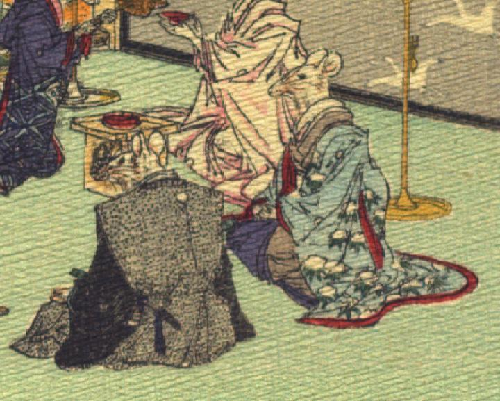

座敷に座る鼠。向って左に、裃を着け、腰に刀を差した鼠が座っている。その右に、墨色の着物に水色の内掛けをまとった鼠が座っている。こちらは女と思われる。
著作者：J.Dautremer／出典：親書誌：U426_nichibunken_0111：Le mariage de la souris／日付：2006／資源識別子：U426_nichibunken_0111_0008_0002
Copyright (c)2010- International Research Center for Japanese Studies, Kyoto, Japan. All rights reserved.